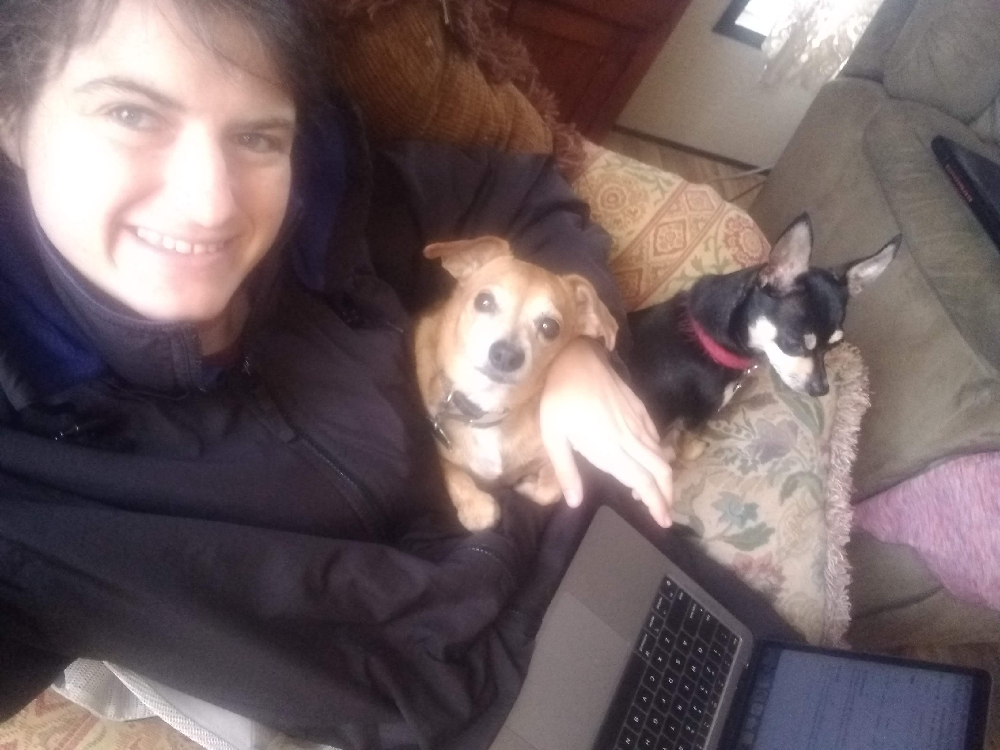

About Veronica
I am a CSS Ninja; I see grids where others see images. Let me make it clear: I much prefer customizing, troubleshooting, or restructuring old software over building new applications. In any case, JavaScript is my forte.
Favorite Gigs
- Reduced website complexity by transforming it from WordPress to Hugo.
- Helped college student with a JavaScript matrices word problem.
- Created a web app by inverting Google Chrome Plugin code.
- Added 100+ new WooCommerce product variations to an existing product CSV file on a WordPress site using NodeJS.
HTML CSS JavaScript jQuery React Node PHP MySQL WordPress